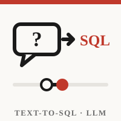
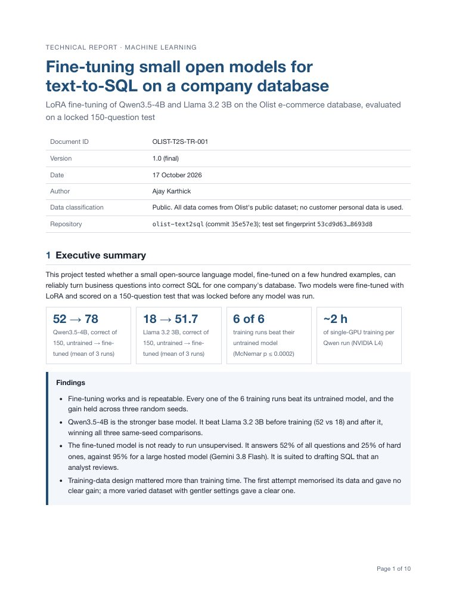

Managers ask data questions in plain English all day: which sellers ship late, how much do we spend on freight, what share of orders arrive on a weekend? Each one waits in an analyst’s queue for a SQL query. Large hosted models can write that SQL, but every call costs money and sends the question outside the company.
So the question I tested was: can a small, open model that runs on one GPU learn to write correct SQL for one company’s database? I used Olist, a Brazilian e-commerce marketplace that published 99,441 real orders across 9 tables. A manager asks a question, and the model has to write a SQLite query that returns the right answer.
It’s the same Olist data as my e-commerce dashboard, so I already knew where its traps were.
The exam came first, and it was locked. Before any model ran, I wrote 150 test questions: 139 around the 9 business themes in Olist’s own README, plus the 11 Olist questions from the Spider 2.0 benchmark. Each one targets a real trap in the data, such as one row per item, missing delivery dates or several reviews per order. I fingerprinted the files (SHA-256) and never edited them again, so the test couldn’t be bent to fit a model.
Scored by results, not by text. An answer counts only if the SQL runs and returns the same result as the reference query (execution accuracy). Two queries written differently can both be right.
Training data written and checked separately. 574 training and 108 validation examples from 118 question families, drafted with Claude. Every query was run against the database and cross-checked by a second, differently written query. Three automatic checks stop any training example from resembling a test question, and no Gemini output was used for training.
LoRA, not a full retrain. I fine-tuned Qwen3.5-4B and Llama 3.2 3B Instruct with LoRA (rank 16) using Unsloth on a Colab L4 GPU: 2 epochs at a learning rate of 1e-4. Only a small adapter is trained (about 120 MB for Qwen), and the checkpoint is chosen on the validation set, never the test.
A fair comparison. Every model gets the same prompt and schema and answers deterministically (greedy decoding). The untrained model is scored on the same GPU and code. Each model was trained 3 times with different random seeds, and the gains are tested with McNemar’s exact test on the same 150 questions, with pass rules written before the runs.
Correct answers out of 150. Every one of the six training runs beat its untrained model.
Untrained vs fine-tuned, mean of 3 training runs. Gemini 3.8 Flash, a large hosted model, shown for reference.
Easy and medium questions improved most. Hard questions barely moved.
| Qwen3.5-4B, my 139 questions | Untrained | Fine-tuned |
|---|---|---|
| Easy | 68% | 89% |
| Medium | 33% | 57% |
| Hard | 18% | 25% |
Test question A09, word for word, with both Qwen answers exactly as the models wrote them.
“How many orders contain items from more than one seller?”
SELECT COUNT(*) AS order_count FROM olist_orders o JOIN olist_order_items oii ON o.order_id = oii.order_id GROUP BY o.order_id HAVING COUNT(DISTINCT oii.seller_id) > 1;
SELECT COUNT(*) AS multi_seller_orders
FROM (SELECT i.order_id
FROM olist_order_items i
GROUP BY i.order_id
HAVING COUNT(DISTINCT i.seller_id) > 1) AS multi_seller
The untrained model found the right orders but counted items inside each one, so it returned 1,278 rows instead of one total. That’s the “one row per item” trap. The fine-tuned model groups first, then counts the groups.
Round 1 looked great during training and failed on the test. The training loss fell to 0.0003, meaning the model had memorised its examples instead of learning the skill.
Round 1 gained only 11 questions, which wasn’t significant (p = 0.13). Round 2, with more varied examples and gentler training, gained 28 (p < 0.0001). Changing the data mattered more than training harder.
One run isn’t enough. The random seed alone moved Llama’s score by 9 questions (48 to 57), so I report all three runs, not the best one.
Data: Olist, work-at-olist-data (MIT licence), 99,441 orders, Sep 2016 to Oct 2018. Spider 2.0 questions from the Spider 2.0 benchmark. All scores are from my locked test set; models: Qwen3.5-4B, Llama 3.2 3B Instruct, Gemini 3.8 Flash. Independent project, not affiliated with Olist.

Technical report · PDF
Every training run with 95% confidence intervals, accuracy by difficulty and by data trap, a full error breakdown, the settings for both training rounds, cost and speed, and the commands to reproduce every number.